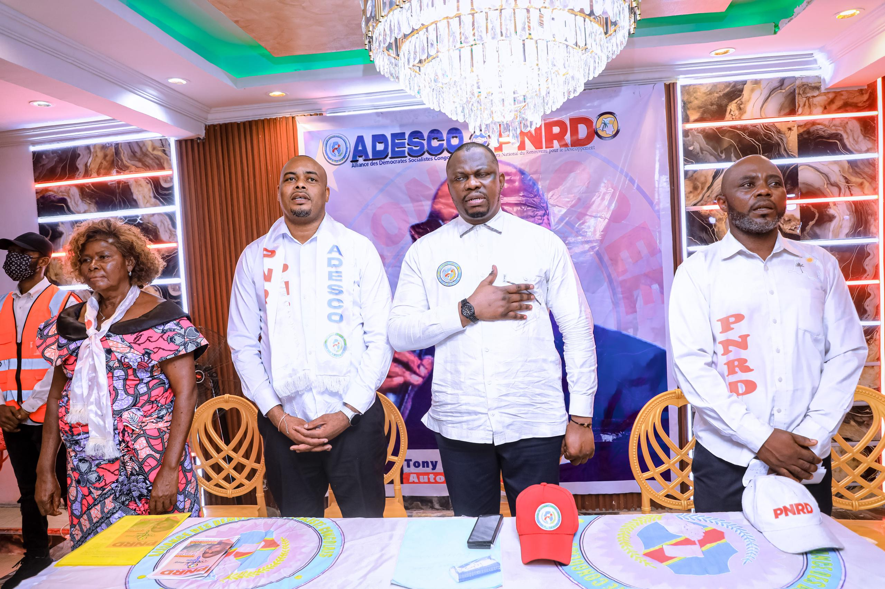
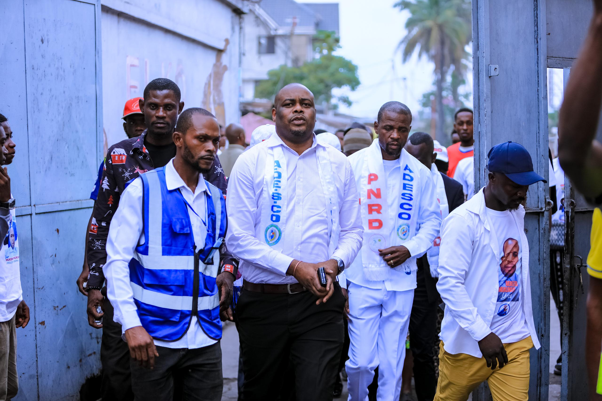

Social
Éducation
Renforcer le système éducatif pour offrir une éducation accessible et de qualité à chaque enfant congolais.
Voir le projet

Le Parti National de Renouveau pour le Développement (PNRD) est engagé à bâtir une République Démocratique du Congo forte, unie et prospère. Nous croyons en un avenir où le développement durable, l’inclusion sociale, et la justice économique sont au cœur de nos actions politiques. Notre parti s’appuie sur des valeurs de transparence, d’engagement citoyen, et d’innovation pour répondre aux défis de notre pays. Ensemble, avançons vers un renouveau qui profite à tous.
En savoir plusGarantir une justice impartiale et équitable pour tous, fondée sur le respect des droits humains et la transparence.
Promouvoir une croissance économique inclusive, durable et créatrice d’emplois pour tous les citoyens.
Assurer l’accès universel aux soins de santé de qualité et renforcer les infrastructures sanitaires.
Favoriser la cohésion sociale, la solidarité et l’inclusion des groupes vulnérables dans le tissu national.
Consolider la paix nationale et assurer la sécurité des citoyens par des actions de prévention et de coopération.
Renforcer le système éducatif pour offrir une éducation accessible et de qualité à chaque enfant congolais.
Voir le projet
Protéger nos ressources naturelles et promouvoir un développement respectueux de l’environnement.

Développer des infrastructures modernes pour soutenir la croissance économique et la qualité de vie.

Encourager l’innovation technologique pour moderniser les services publics et privés.
Des fédérations, des permanences et des militants engagés à travers les 26 provinces de la RDC.
Conférences, forums et ateliers : retrouvez les rendez-vous du parti.
Voir les événements passésSolutions innovantes à l’emploi des jeunes en RDC.
15h00Perspectives de croissance économique durable en RDC.
09h30Sensibilisation aux soins préventifs et à l’accès aux services de santé.
14h00Retour sur la cérémonie de clôture du Mois de la Femme, organisée en partenariat avec ADESCO.
Lire le compte renduL’équipe dirigeante du PNRD est composée de professionnels engagés, passionnés par le développement durable, la justice sociale et le progrès de notre nation. Ensemble, ils incarnent les valeurs et la vision du parti pour construire un avenir meilleur pour tous les Congolais.

Tony KANKU
Autorité morale

Ali KUTUMISA
Président

Martin IWEMBA
Secrétaire Général